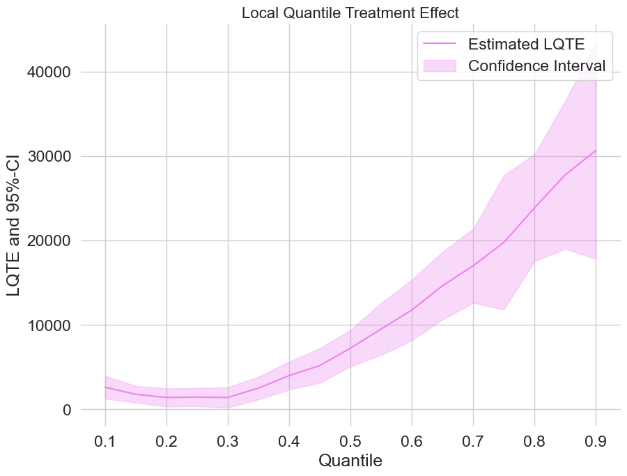
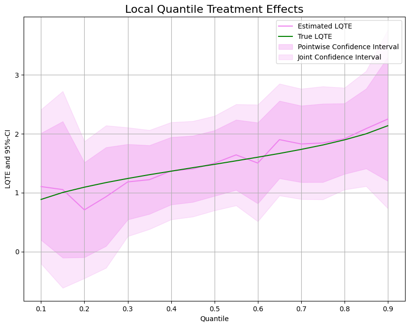

Examples#
R: Case studies#
These are case studies with the R package DoubleML.


Python: Case studies#
These are case studies with the Python package DoubleML.

Python: Impact of 401(k) on Financial Wealth

Python: Cluster Robust Double Machine Learning

Python: Group Average Treatment Effects (GATEs)

Python: Conditional Average Treatment Effects (CATEs)

Python: Difference-in-Differences

Python: Difference-in-Differences Pre-Testing

Python: Impact of 401(k) on Financial Wealth (Quantile Effects)

Python: Potential Quantiles and Quantile Treatment Effects

Python: Conditional Value at Risk of potential outcomes
Python: Choice of learners

Python: Sensitivity Analysis
Sandbox#
These are examples which are work-in-progress and/or not yet fully documented.